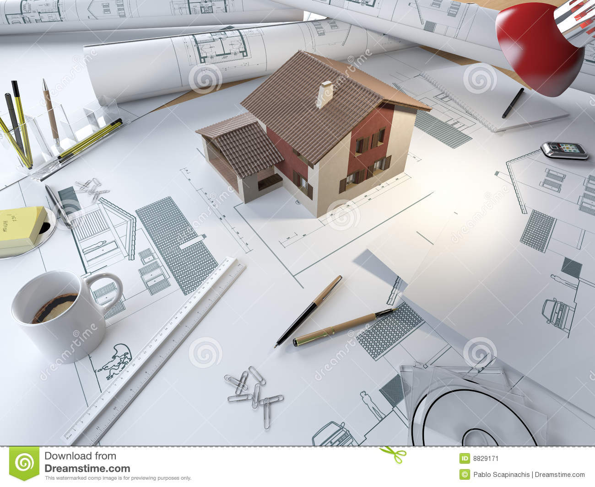

A környezetem működése mindig is felkeltette az érdeklődésemet, ezért is vállalkoztam a mérnöki szakma elsajátítására. A leginkább a 3D technológia a fő érdeklődési köröm, és ezt a tudást bővítem napi szinten. Ha nem modellezek akkor a fotózásban élem ki magamat.
Amióta az eszemet tudom csapatban szerettem dolgozni, legyen szó tanulásról, hobbikról, vagy akár sportokról. Az emberekkel való kommunikálás és munka fontos része minden szakmának, ezért tartom elengedhetetlennek az elsajátítását.
 A Blenderben való látványtervezésen kívül a CAD különböző programain több éves tapasztalattal rendelkezem, és törekszem lépést tartani az újdonságokkal, hogy naprakész legyek, és mindig a leghatékonyabban végrehajtani az adott munkát.